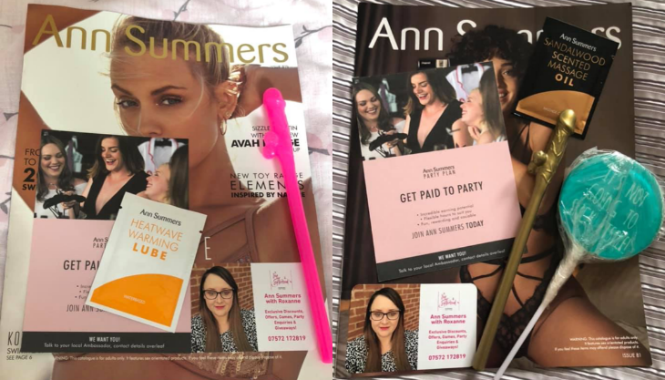
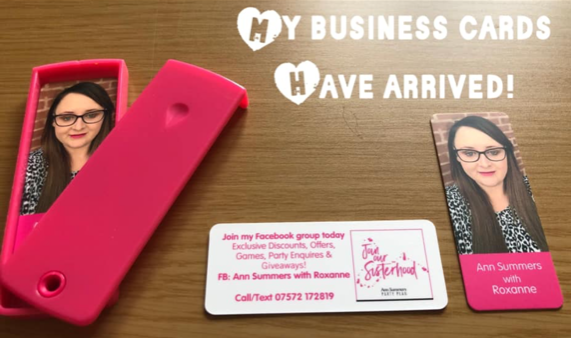
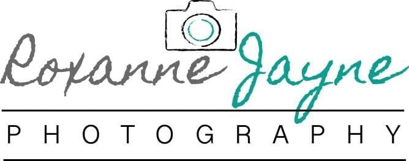
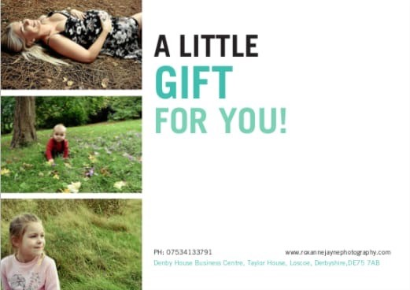
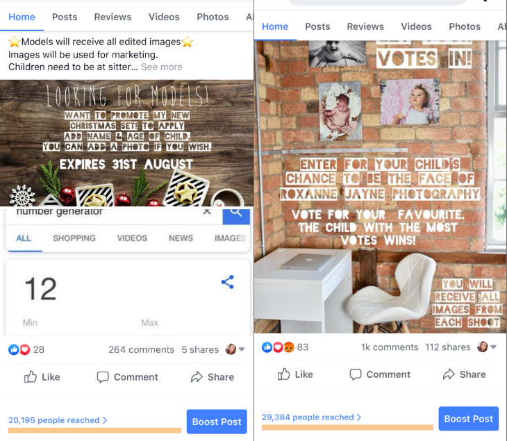
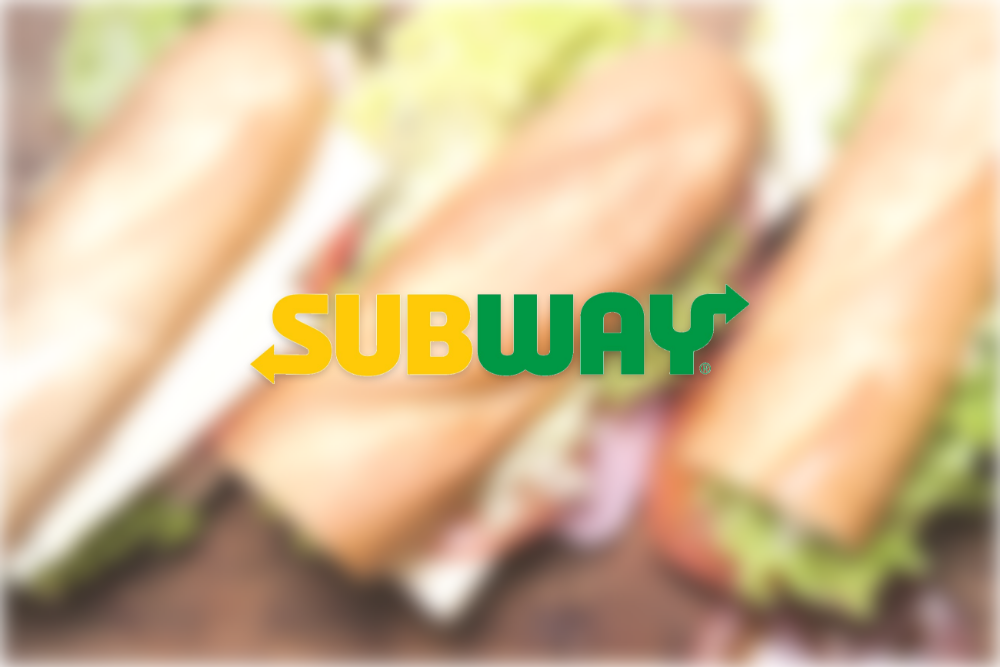

During my time working as an Ann Summers Rep I ran a number of marketing campaigns; online and offline. Below are examples of some of my work and my thought process.
Being creative and also keeping in mind of ROI, I put together a promotional pack for new customers. I chose to be the face of the brand by attaching a personalised sticker. I wanted to stand out from the crowd as being unique and personal. Then I included some low-cost freebies to give an incentive to these new customers.

I kept the branding personal when creating the business cards. I chose to put a portrait photo of myself which took up 70% of the front of the business cards. On the back of the business cards I have kept to the same branding; hot pink and white. My contact number is present, giving the option to contact me directly.
Once my business cards arrived, I posted this photo on Facebook and also posted it on the Ann Summers Rep page. I was inundated with comments and likes, asking where I made them and that it was such a good idea. I negotiated a referral scheme with the company who I bought the business cards from and got £10 for each new customer that I referred.

Looking outside of the box and utilising my skill set in forming 3rd party b2b relationships, I contacted Firefly Photography and agreed some joint business development. They provided me with a full photo shoot and all images, I used these images to showcase the Ann Summers lingerie and I modelled it. I then posted these images on the Facebook group. I got great feedback, and this increased sales. Also, I referred lots of customers to Firefly for photoshoots of their own.
Having a love for photography and being business minded, I set up my own photography business.

When designing the logo, I wanted to keep it friendly looking to match the brand but also professional.
When creating the gift cards, I kept my target audience in mind and used images of mums to be and families. I purposely left a blank space so that the customer could personalise the gift card and it came with an envelope. The font chosen matched my logo.

Two of my most successful campaigns on social media reached 20,195 people and 29,384 people with no paid advertising.

‘Model call outs’ are a success as the comments, tags and shares are high. Taking ROI into account, I gave one photosession away worth RRP £50. However because of the social media engagement, on average I would gain 5 new bookings.
Currently I work at Subway as a Sales and Marketing Assistant. Day to day I work in store and also assist with new marketing concepts. Most recently, I planned and successfully delivered a marketing campaign to the nearby local businesses.
